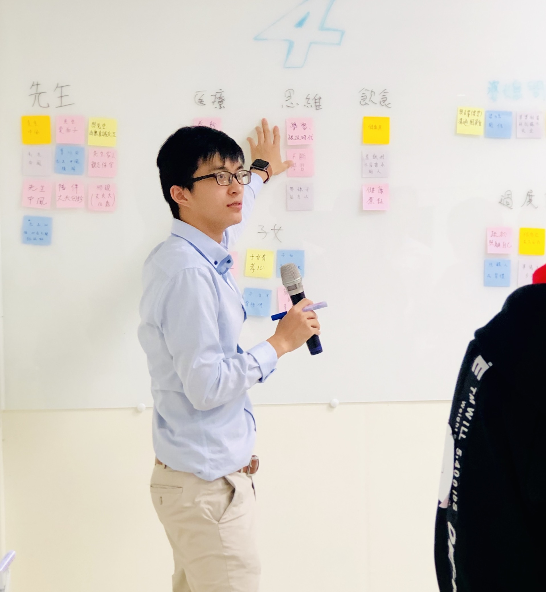
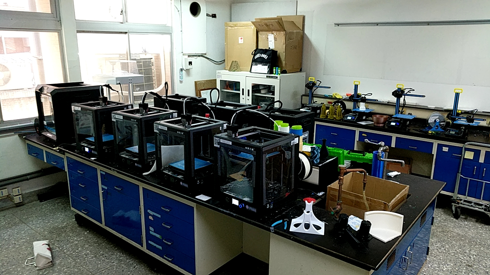
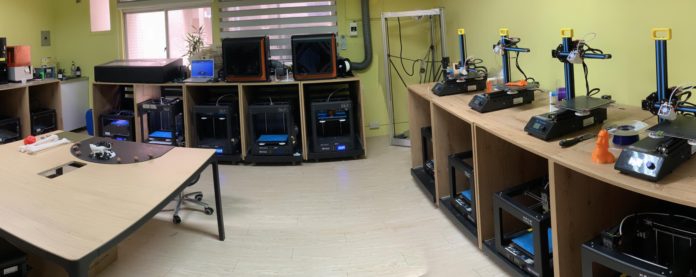
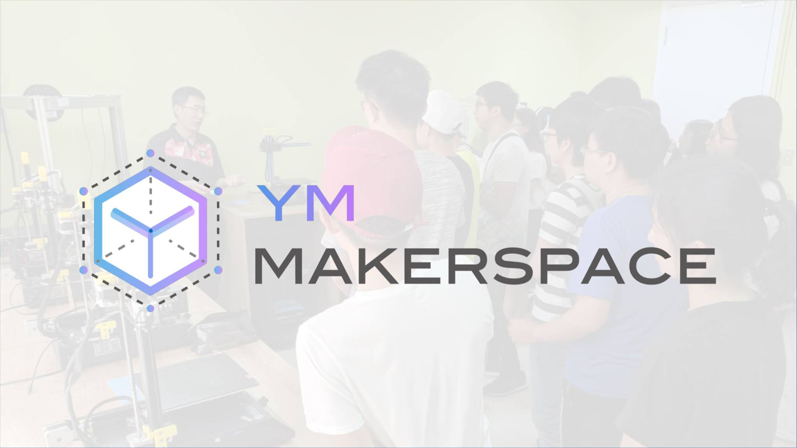
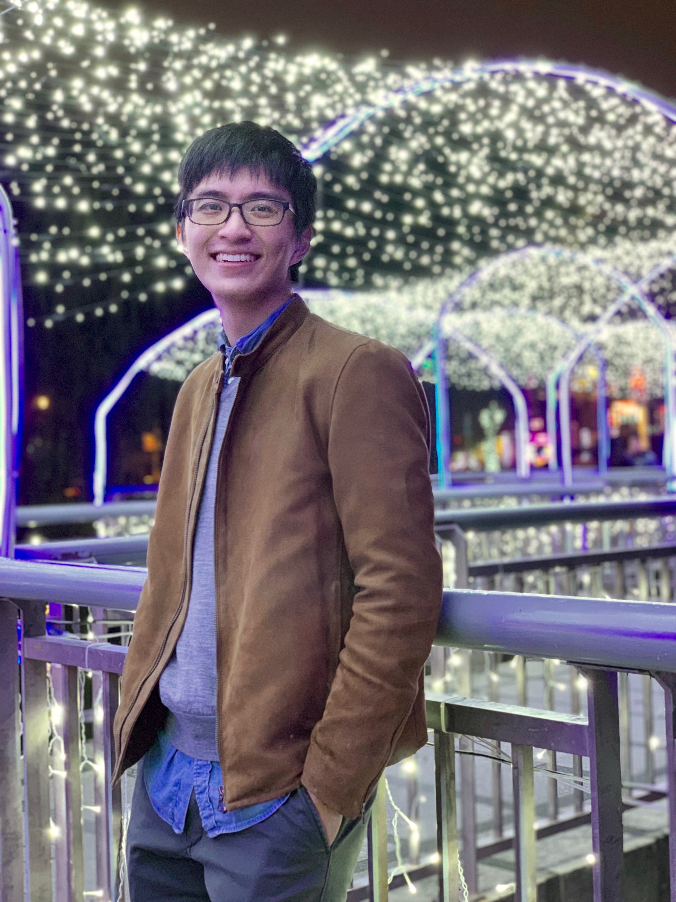
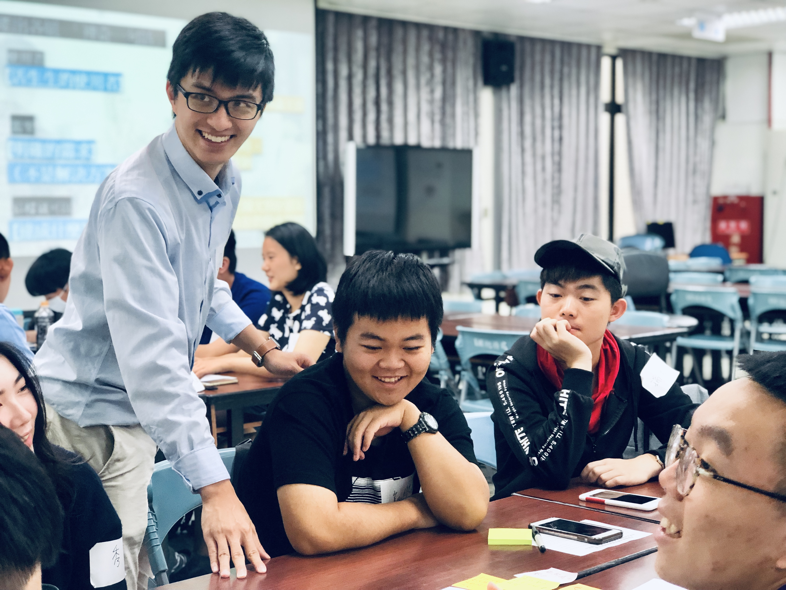

MoodWide 沐懷管理顧問
企業、團隊培訓課程＆人生設計課程
三大培訓，與您一同跨出改變的第一步
美好人生設計 x 跨領域合作 x 創新與創業

擔任PM/Coach，引導整體以及培訓中專案進行
企業、組織培訓：協助組織企業、主管內部創新與團隊建置，使用流程如設計思考、找到你的為什麼、設計你的人生等。
人生設計工作坊：給予卡關者、學生找尋方向的方法學，實體觸及影響3000+人

Unmetneeds臨床需求平台
醫材設計 x 高等教育 x 專欄撰寫
為解決臨床人員的未滿足需求（unmet-needs），我們希望能在此媒合有興趣參與研發的學研界人士，共同解決這些臨床上的挑戰。

擔任總PM，引導整體以及全部專案推進。
醫材專案
：身為「臨床工程溝通者」，我們串連、溝通臨床與工程端，來幫助推動其專案往前邁進，節省溝通、來回的時間。最後讓臨床環境、患者得以改善、受惠。
專欄撰寫：希望從醫工的角度出發，與讀者分享醫材開發背後的巧思。藉由介紹醫材設計的觀點、開發醫材的經驗分享，與整理相關的知識資源，讓大家得知，醫材開發，有跡可循。
高等教育：於台大與陽明開設課程，引導40+組團隊醫材開發。

Makerspace 陽明創客
擔任PM，規劃並執行整體進度
打造在陽明校內的空間，從零開始於學校建置，找資金、空間改建、購置機器（3D列印機、電腦、雷切機等）與使用規則。
原樣：
一年後：
廣設課程、工作坊與競賽使1000+學生學會3D列印，並實際動手解決問題。

Others 其他經歷

學經歷
跨域於醫學與工程，淬煉出不同領域專案推進與溝通的技巧。
陽明大學 醫學工程＆交通大學 機械工程
上海今皓光電 實習製程工程師
台北榮總 復健科/泌尿科/醫研部/神經外科 RA
台大醫院 急診部/外科部 RA
台大醫工所/陽明神研所 RA
馬偕醫學院兼任教師
陽明大學創客中心 PM
Unmetneeds臨床需求平台 PM
沐懷管理顧問 PM

大型專案經歷
機械手臂--
台大醫院 心臟外科 心臟機械手臂 機構設計
台大醫院 腸胃外科 內視鏡機械手臂 機構設計
AI、Data Science--
台大醫院 急診系統 CDSS
台北榮總 神外 腦水腫 判讀AI
台北榮總 神外 轉移瘤 預測AI
多倫多大學 腦認知功能 判讀AI
IBM＆秀傳 AI視覺復健聊天機器人
Chatbot、App＆醫院系統--
台北榮總 復健科 智慧復健＆副作用紀錄系統
台北榮總 醫研部 肝癌預判App
考古豹 國考考古題聊天機器人
3D列印--
小兒麻痹進食用外骨骼